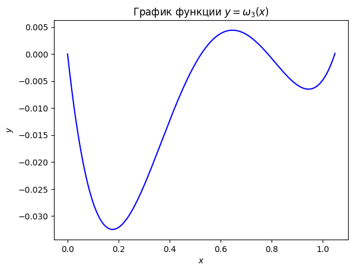
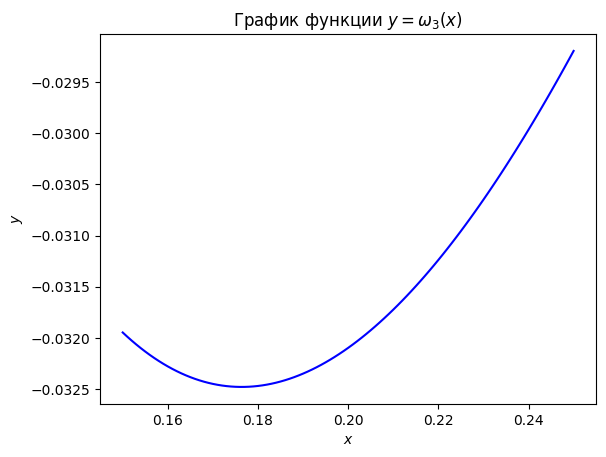
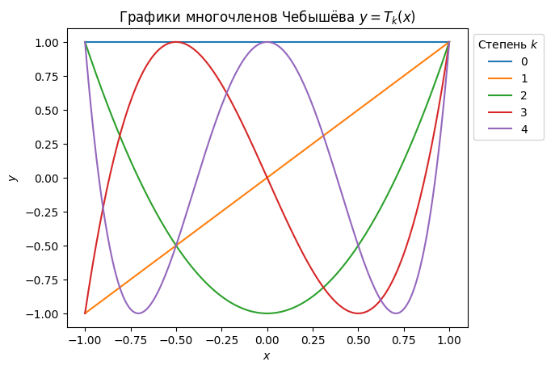
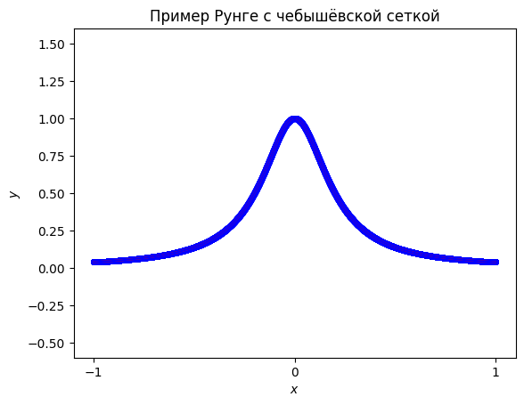

Семинар 9. Глобальная интерполяция (продолжение)#
Внимание! Семинар содержит интерактивные демонстрации. На сайте они представлены в статическом виде. Для работы интерактивных элементов необходимо скачать страницу в формате ipynb и запустить ipynb-файл локально.
Перед изучением материалов семинара рекомендуем посетить лекцию или посмотреть видеозапись лекции. Ссылки (YouTube): лекция 10. Желательно также предварительно изучить материалы восьмого семинара.
Предполагается, что читатель знает
теорему Ролля,
определение \(C\)-нормы (равномерной нормы) \(||\cdot||_C\) в пространстве \(C^0[a,b]\), а также понятие равномерной сходимости функциональной последовательности,
классификацию погрешностей вычислений.
Погрешность интерполяции#
На прошлом семинаре мы сформулировали задачу интерполяции и рассмотрели один из наиболее простых и распространённых способов интерполирования таблично заданных функций — алгебраическую интерполяцию. Мы познакомились с двумя формами записи интерполяционного полинома: Лагранжа и Ньютона, — но не затронули вопроса о погрешностях, возникающих при приближении функции-оригинала этими полиномами. Настоящий семинар посвящён изучению именно этого вопроса.
Как и ранее, будем считать, что на конечном отрезке \([a,b]\subset R\) введена сетка из \(n+1\) узлов и определена функция-оригинал \(f\) (напомним, что на практике она обычно неизвестна). Эту функцию мы приближаем интерполянтом \(\widetilde{f}\equiv P_n\), имеющим вид алгебраического полинома (в форме Лагранжа или Ньютона). Дополнительно предполагаем, что функция-оригинал \(n+1\) раз непрерывно дифференцируема. Назначение последнего требования станет ясно из дальнейшего.
Поскольку и \(f\), и \(P_n\) — скалярные функции скалярного аргумента, в качестве меры погрешности интерполяции в точке можно выбрать модуль разности значений функций \(f\) и \(P_n\), вычисленных в заданной точке \(x\in[a,b]\). Иначе говоря, о величине ошибки интерполяции в точке можно судить по величине модуля разности
Функция \(R_n(x)\) называется остаточным членом интерполяции. В силу постановки задачи интерполяции очевидно, что в узлах заданной сетки остаточный член интерполяции равен нулю: \(R_n(x_i)=0\), \(0\leq i\leq n\). Другими словами, в арифметике бесконечной разрядности погрешность интерполяции в узлах сетки нулевая.
Нас интересует оценка на модуль остаточного члена интерполяции в некоторой точке \(\widehat{x}\in[a,b]\), не совпадающей ни с одним из узлов сетки, введённой на отрезке \([a,b]\): \(\widehat{x}\neq x_i\), \(0\leq i\leq n\). Чтобы получить такую оценку, рассмотрим вспомогательную функцию
Через \(A\) здесь обозначена некоторая константа; кроме того, использована введённая на прошлом семинаре функция
Легко видеть, что при произвольной константе \(A\) функция \(g(x,A)\) равна нулю в узлах сетки: \(g(x_i,A)=0\), \(0\leq i\leq n\). Действительно, как уже отмечалось выше, \(R_n(x_i)=0\), а из определения функции \(\omega_n(x)\) следует, что и \(\omega_n(x_i)=0\). Таким образом, при произвольной константе \(A\) функция \(g(x,A)\) имеет \(n+1\) нулей (точнее — не менее \(n+1\) нулей) на отрезке \([a,b]\).
Подберём константу \(A\) так, чтобы функция \(g(x,A)\) гарантированно имела ещё один нуль, причём именно в точке \(x=\widehat{x}\). Очевидно, для этого достаточно положить
Подчеркнём, что выбор такого значения для константы \(A\) корректен, поскольку точка \(\widehat{x}\) не совпадает ни с одним из узлов сетки, так что \(\omega_n(\widehat{x})\neq 0\). Итак, функция \(g=g(x,\widehat{A})\) имеет не менее \(n+2\) нулей на отрезке \([a,b]\): \(n+1\) нулей в точках, совпадающих с узлами сетки, и по крайней мере ещё один нуль в точке \(x=\widehat{x}\).
Выше мы предположили, что \(f\in C^{n+1}[a,b]\). Тогда, очевидно, и \(g(x,\widehat{A})\in C^{n+1}[a,b]\), поскольку функции \(P_n\) и \(\omega_n\), входящие в определение функции \(g\), суть полиномы. Так как \(g(x,\widehat{A})\in C^{n+1}[a,b]\), можно \(n+1\) раз применить теорему Ролля. Из неё следует, что если функция \(g(x,\widehat{A})\) имеет не менее \(n+2\) нулей на отрезке \([a,b]\), то первая производная \(g'(x,\widehat{A})\in C^{n}[a,b]\) имеет не менее \(n+1\) нулей на том же отрезке, вторая производная \(g''(x,\widehat{A})\in C^{n-1}[a,b]\) — не менее \(n\) нулей и т.д. до \((n+1)\)-й производной \(g^{(n+1)}(x,\widehat{A})\in C^{0}[a,b]\), имеющей не менее одного нуля на отрезке \([a,b]\). Значит, существует точка \(\xi\in[a,b]\) такая, что \(g^{(n+1)}(\xi,\widehat{A})=0\), т.е.
Мы учли, что \(P_n^{(n+1)}(x)=0\) в силу того, что \(P_n\) — полином степени не выше \(n\); кроме того легко показать, что \(\omega_n^{(n+1)}(\xi)=(n+1)!\).
Упражнение. Исходя из определения функции \(\omega_n=\omega_n(x)\), докажите, что \(\omega_n^{(n+1)}(x)=(n+1)!\).
Указание. Примените индукцию по \(n\).
Из последнего равенства следует, что
Подставляя сюда найденное выше значение для \(\widehat{A}\), получаем:
Иначе говоря,
Мы вывели эту формулу для точки \(\widehat{x}\in [a,b]\), не совпадающей ни с одним из узлов сетки. Однако \(R_n(x_i)=\omega_n(x_i)=0\), \(0\leq i\leq n\), и поэтому та же формула справедлива и для узлов сетки. Значит, в ней можно заменить \(\widehat{x}\) на \(x\), считая, что \(x\) — произвольная точка, принадлежащая отрезку \([a,b]\). Следует также заметить, что точка \(\xi\) в нашем выводе определяется для конкретного \(\widehat{x}\), так что разным \(\widehat{x}\) отвечают, вообще говоря, разные \(\xi\).
Итак, для любого \(x\in [a,b]\) можно указать точку \(\xi\in[a,b]\) такую, что
Если взять точную верхнюю грань по \(\xi\) от обеих частей равенства, то получится искомая оценка на погрешность интерполяции, справедливая для фиксированной точки \(x\in[a,b]\):
Можно оценить погрешность не в заданной точке \(x\in [a,b]\), а на всём отрезке \([a,b]\) — для этого следует взять точную верхнюю грань и по \(x\):
Если рассматриваемая сетка является равномерной, а её граничные узлы совпадают с граничными точками отрезка \([a,b]\), то
Предполагая, что произвольная точка \(x\in [a,b]\) лежит между \(l\)-м и \((l+1)\)-м узлами (или совпадает с \(l\)-м узлом), можем написать:
Нетрудно показать, что
поэтому
Окончательно имеем следующую оценку погрешности интерполяции для случая равномерной сетки:
Она завышена тем сильнее, чем больше \(n\).
Отметим, что все полученные формулы имеют, в основном, теоретическое значение: на практике применить их обычно не удаётся, так как неизвестна функция-образ \(f\) (и, соответственно, неизвестна константа \(M_{n+1}\)).
Задача 1#
Функция \(f(x)=\sin x\) приближена на отрезке \([0,\pi/3]\) алгебраическим полиномом, построенным по нижеследующей таблице. Оценить ошибку интерполяции.
Решение заключается в вычислении (или оценке сверху) величин \(M_4\) и \(\big|\big|\omega_n(x)\big|\big|_C\), а также применении выведенной выше формулы (в данном случае \(n=3\), поскольку значения функции заданы в четырёх узлах, а узлы нумеруются, начиная с нуля). Заметим, что \(f^{(4)}(x)=\sin{x}=f(x)\), причём функция \(f(x)\) строго возрастает на отрезке \([0,\pi/3]\) и принимает на нём неотрицательные значения. Поэтому
Величина \(\big|\big|\omega_n(x)\big|\big|_C\) представляет собой точную верхнюю грань выражения
рассматриваемого при \(x\in[0,\pi/3]\). В некоторых задачах точную верхнюю грань подобного произведения скобок легко найти аналитически. В данном случае проще дать оценку сверху на \(\big|\big|\omega_n(x)\big|\big|_C\). Её можно установить, например, с помощью графика функции \(\omega_3=\omega_3(x)\). Напишем программу для его построения:
import numpy as np
import matplotlib.pyplot as plt
def graph(bracket: tuple):
func = lambda x: x * (x - np.pi/6) * (x - np.pi/4) * (x - np.pi/3)
func = np.vectorize(func)
x = np.arange(bracket[0], bracket[1] + 0.001, 0.001)
y = func(x)
fig, ax = plt.subplots()
ax.plot(x, y, color='blue')
ax.set_xlabel("$x$")
ax.set_ylabel("$y$")
plt.title("График функции $y=\\omega_3(x)$")
plt.show()
Сначала построим график функции на всём отрезке \([0,\pi/3]\):
graph((0, np.pi/3))

Видно, что наибольшее по модулю значение расположено в окрестности точки \(x=0,2\). “Присмотримся” к этой окрестности:
eps = 0.05
graph((0.2 - eps, 0.2 + eps))

Как видим, можно считать, что \(|\omega_3(x)|\leq 0,033\). Тогда искомая оценка:
Заметим, что предложенная в условии задачи сетка не является равномерной. Однако при добавлении узла \(x=\pi/12\) она становится равномерной (с шагом \(h=\pi/12\)). Оценим ошибку интерполяции и в этом случае, т.е. решим ту же задачу для следующей таблицы:
Имеем: \(n=4\), \(f^{(5)}=\cos{x}\). Очевидно, что \(M_5=1\). В силу равномерности сетки удобно воспользоваться формулой, выведенной в конце предыдущего раздела:
Пример Рунге#
Вернёмся к оценке
из которой выше мы получили две другие оценки на погрешность интерполяции. Из этой формулы следует, что если функция-образ \(f\) и отрезок \([a,b]\) зафиксированы (как это часто бывает на практике), то погрешность интерполяции может изменяться в силу двух причин. Во-первых, при заданном \(n\) узлы сетки могут располагаться на отрезке по-разному, а от их расположения зависит величина \(\big|\omega_n(x)\big|\). Во-вторых, число \(n\) (и, соответственно, количество узлов сетки \(n+1\)) тоже может быть различным; его изменение влияет и на константу \(M_{n+1}/(n+1)!\), и на величину \(\big|\omega_n(x)\big|\). Возникает естественный вопрос: как можно уменьшить оценку на погрешность интерполяции, пользуясь двумя указанными способами её изменения — за счёт выбора количества узлов и самих узлов? Разумеется, этот вопрос имеет смысл только в том случае, если при интерполировании неизвестной функции есть возможность распоряжаться выбором сетки (т.е. доступны значения функции \(f\) в произвольных узлах).
На первый взгляд может показаться, что для уменьшения оценки на погрешность достаточно увеличивать \(n\), т.е. включать в сетку много узлов, не особенно заботясь об их расположении на отрезке \([a,b]\). С одной стороны, это кажется естественным в силу того, что приведённая формула содержит деление на \((n+1)!\), а факториал возрастает, как известно, очень быстро. С другой стороны, из общих соображений представляется очевидным, что чем больше узлов содержит сетка, тем больше информации о неизвестной функции используется при построении интерполянта, а следовательно, и результат построения должен лучше соответствовать функции-оригиналу. Все эти выводы согласуются с примером из предыдущей задачи: мы видели, что добавление в сетку одного узла привело к уменьшению оценки погрешности почти на порядок.
Оказывается, однако, что в действительности погрешность интерполяции может и не убывать с ростом числа узлов в сетке, т.е. для уменьшения погрешности, вообще говоря, недостаточно просто увеличить параметр \(n\). Классическим контрпримером, иллюстрирующим это утверждение, является так называемый пример Рунге (предложен немецким математиком Карлом Рунге в 1901 г.). В этом примере в качестве функции-оригинала рассматривается функция
на отрезке \([-1,1]\). Введём на этом отрезке равномерную сетку, состоящую из \(n+1\) узлов:
Можно показать, что погрешность интерполяции функции \(f_\text{R}\) алгебраическим полиномом \(P_n\) по значениям \(f_\text{R}(x_i)\) в узлах введённой сетки стремится к бесконечности при увеличении \(n\):
Мы не будем приводить строгого аналитического анализа этого примера и ограничимся численной демонстрацией. Напишем программу, составляющую таблицу значений функции \(f_\text{R}\) на отрезке \([-1,1]\) по заданному количеству узлов \(n+1\) равномерной сетки:
import numpy as np
def Runge_function(x: float):
return 1 / (1 + 25 * x**2)
def create_table(n: int):
x = np.linspace(-1, 1, n+1)
y = np.vectorize(Runge_function)(x)
return x, y
При различных \(n\) будем строить алгебраические интерполянты по найденной таблице значений функции \(f_\text{R}\). Это можно сделать с помощью уже упоминавшегося на первом семинаре класса BarycentricInterpolator (документация) модуля interpolate (документация) библиотеки scipy. Построенные полиномы \(P_n\) будем отображать на графике вместе с самой функцией Рунге \(f_\text{R}\) и точками, соответствующими узлам сетки. Кроме того, добавим в программу вычисление погрешности интерполяции:
from scipy.interpolate import BarycentricInterpolator
import matplotlib.pyplot as plt
def graph_Runge(n: int):
x_points, y_points = create_table(n)
p_n = BarycentricInterpolator(x_points, y_points)
grid = np.linspace(-1, 1, 1000)
y_Runge = np.vectorize(Runge_function)(grid)
y_p = p_n(grid)
fig, ax = plt.subplots()
ax.plot(grid, y_Runge, color='red')
ax.plot(grid, y_p, color='blue')
ax.scatter(x_points, y_points, color='blue', s=15)
ax.set_xlabel("$x$")
ax.set_ylabel("$y$")
ax.set_xticks([-1, 0, 1])
ax.set_xlim([-1.1, 1.1])
ax.set_ylim([-0.6, 1.6])
plt.title("Пример Рунге")
Delta = np.max( np.abs(y_Runge - y_p) )
print("Погрешность интерполяции: {:.3e}".format(Delta))
plt.show()
from ipywidgets import interact, IntSlider
n_w = IntSlider(min=1, max=50, step=1, value=3)
interact(graph_Runge, n=n_w);
Заметим, что в предложенной программе погрешность интерполяции вычисляется приближённо: сначала находится разность массивов, содержащих значения функции-оригинала и функции-образа (интерполянта), а затем определяется наибольший по модулю элемент полученного массива-разности. Следует иметь в виду, что такая оценка может оказаться заниженной. Однако в данном случае это не мешает проследить интересующую нас закономерность.
Видно, что с увеличением \(n\) последовательность полиномов \(P_n\) сходится к функции Рунге в средней части отрезка \([-1,1]\) (примерно при \(|x|<0,6\)), а по краям отрезка сходимость отсутствует и наблюдаются сильные осцилляции, приводящие к резкому росту погрешности.
Оказывается, что проиллюстрированный выше эффект является весьма общим: для любой последовательности сеток \(G_n\), заданных на отрезке \([a,b]\), можно указать непрерывную функцию \(f\) такую, что построенные по таблицам её значений алгебраические полиномы \(P_n\) не будут сходиться к ней равномерно с увеличением \(n\) (теорема Фабера—Бернштейна). Иными словами, пример “плохой” функции, на которой “ломается” алгебраическая интерполяция, можно подобрать для любой сетки.
С другой стороны, известно, что для всякой функции \(f\), непрерывной на отрезке \([a,b]\), найдётся последовательность сеток \(G_n\), дающая равномерно сходящийся интерполяционный процесс, т.е. обеспечивающая равномерную сходимость полиномов \(P_n\), построенных по значениям \(f(x_i)\) в узлах сеток \(G_n\), к функции \(f\) (теорема Марцинкевича). Проще говоря, для любой непрерывной функции можно найти “хорошую” сетку и построить на этой сетке алгебраический полином со сколь угодно маленькой погрешностью. Однако отыскать такую “хорошую” сетку для заданной функции чрезвычайно трудно, а на практике это и вовсе невозможно сделать, потому что неизвестна функция-оригинал. Впрочем, существует приём (мы познакомимся с ним в следующем разделе), позволяющий гарантированно минимизировать погрешность интерполяции (нужно только понимать, что минимизация погрешности, конечно, не равносильна равномерной сходимости). Но приём, о котором идёт речь, связан со специальным выбором узлов сетки, а выбор узлов доступен не всегда. Именно поэтому в реальных вычислениях глобальная интерполяция алгебраическими полиномами применяется не так часто: даже при не очень большом числе узлов сетки есть опасность столкнуться с ростом погрешности интерполяции (особенно если приходится работать с фиксированными узлами, т.е. если узлы нельзя выбирать). Этот недостаток глобальной интерполяции объясняет широкое распространение сплайн-интерполяции, о которой мы будем говорить на следующем семинаре.
Интерполяция на чебышёвской сетке#
Итак, при приближении функций алгебраическими полиномами высоких степеней погрешность метода может быть очень значительной по величине. Один из способов решения этой проблемы заключается в специальном выборе узлов сетки, позволяющем минимизировать погрешность интерполяции. Суть этого приёма заключается в следующем.
Мы видели, что в формулу для величины \(\Delta^{(\text{m})}_\text{int}\), являющейся оценкой на погрешность интерполяции на всём отрезке \([a,b]\), входит в качестве сомножителя \(C\)-норма полинома \(\omega_n\) (степени \(n+1\)). Поставим задачу минимизировать эту норму при фиксированном \(n\). Заметим, что нули полинома \(\omega_n\) совпадают с узлами сетки, а коэффициент при его старшем члене равен единице. Таким образом, выбрав среди всех полиномов степени \(n+1\) (с единичным коэффициентом при старшем члене) тот, который имеет наименьшую \(C\)-норму, мы автоматически найдём сетку, доставляющую минимум оценке погрешности \(\Delta^{(\text{m})}_\text{int}\) — в качестве узлов такой сетки достаточно будет взять нули выбранного полинома. Поскольку \(\big|\big|\omega_n(x)\big|\big|_C=\big|\big|\omega_n(x)-0\big|\big|_C\), можно утверждать, что задача минимизации погрешности алгебраической интерполяции на сетке из \(n+1\) узлов сводится к подбору полинома степени \(n+1\), имеющего единичный коэффициент при старшем члене и наименьшее уклонение от нуля (в смысле \(C\)-нормы).
Оказывается, решением этой задачи служит алгебраический полином, пропорциональный многочлену Чебышёва (первого рода) степени \(n+1\). О многочленах Чебышёва мы уже упоминали на пятом семинаре. Напомним, что так называются многочлены
степени \(k\), определённые на отрезке \([-1,1]\). Можно показать, что для них справедливо рекуррентное соотношение
Таблицу из нескольких первых многочленов Чебышёва можно получить с помощью функции chebyshevt_poly (документация) библиотеки sympy:
from sympy import latex, chebyshevt_poly
from IPython.display import display, Math
def Chebyshev_print(p: int):
print('Несколько первых многочленов Чебышёва:')
for i in range(p):
display( Math( 'T_{' + str(i) + '}=' + latex(chebyshevt_poly(i) ) ) )
Chebyshev_print(11)
Несколько первых многочленов Чебышёва:
Графики первых пяти многочленов Чебышёва мы уже строили на пятом семинаре. Для наглядности повторим эту демонстрацию:
import numpy as np
import scipy as sp
import matplotlib.pyplot as plt
def graph_Chebyshev_polynomials(k: int):
grid = np.arange(-1, 1 + 0.01, 0.01)
fig, ax = plt.subplots()
for i in range(k):
y = sp.special.eval_chebyt(i, grid)
ax.plot(grid, y, label=i)
ax.set_xlabel("$x$")
ax.set_ylabel("$y$")
ax.legend(title="Степень $k$", loc="upper left", bbox_to_anchor=(1, 1))
plt.title("Графики многочленов Чебышёва $y=T_k(x)$")
plt.show()
graph_Chebyshev_polynomials(5)

Многочлены Чебышёва обладают многими свойствами. Приведём сводку некоторых из них:
многочлены чётных степеней \(T_{2k}(x)\) содержат только чётные степени \(x\) (и поэтому являются чётными функциями), а многочлены нечётных степеней \(T_{2k+1}(x)\) — только нечётные степени \(x\) (и поэтому являются нечётными функциями);
сумма коэффициентов любого многочлена \(T_k(x)\) равна единице;
старший коэффициент многочлена \(T_k(x)\) есть \(2^{k-1}\);
справедливы следующие соотношения:
\[T_k(1)=1,\quad T_k(-1)=(-1)^k,\quad T_{2k}(0)=(-1)^k,\quad T_{2k+1}(0)=0,\]\[T_k'(1)=k^2,\quad T_k'(-1)=(-1)^k \cdot k^2,\quad T_{2k}'(0)=(-1)^k,\quad T_{2k+1}'(0)=(2k+1)\cdot\sin\bigg[\frac{2k+1}{2}\pi\bigg];\]верны следующие оценки:
\[\big|T_k(x)\big|\leq 1,\quad \big|T'_k(x)\big|\leq k^2,\quad x\in[-1,1],\]многочлены Чебышёва ортогональны с весом:
\[\begin{split}\int\limits_{-1}^{1}\frac{dx}{\sqrt{1-x^2}}\,T_k(x)T_l(x)= \begin{cases} 0,&\quad k\neq l,\\ \pi/2,&\quad k=l>0,\\ \pi,&\quad k=l=0; \end{cases}\end{split}\]при \(|x|>1\) справедлива формула
\[T_k(x)=\frac{\big(x+\sqrt{x^2-1}\big)^k+\big(x-\sqrt{x^2-1}\big)^k}{2};\]все \(k\) нулей многочлена \(T_k(x)\) действительны, различны, расположены на отрезке \([-1, 1]\) и задаются формулой
\[\xi_j=\cos\bigg[\frac{2j+1}{2k}\pi\bigg],\quad j=0,\,1\,\dots,\,k-1;\]между любыми двумя соседними нулями многочлена \(T_k(x)\) (\(k\geq 2\)) расположен один и только один нуль многочлена \(T_{k-1}(x)\);
многочлен \(T_k(x)\) (\(k\geq 1\)) имеет \(k+1\) экстремальных точек на отрезке \([-1,1]\), причём все они действительны, различны и задаются формулой
\[\zeta_j=\cos\frac{\pi j}{k},\quad j=0,\phantom{,}1,\phantom{,}\dots,\phantom{,}k,\quad \text{так что}\quad T_k(\zeta_j)=(-1)^j;\]подчеркнём, что речь идёт именно об экстремумах на отрезке \([-1,1]\), поэтому граничные точки отрезка входят в число экстремумов в силу свойств 4 и 5; если функция \(T_n(x)\) рассматривается на всей числовой прямой, то точки \(\zeta_0=1\) и \(\zeta_k=-1\) перестают быть экстремумами;
производная \(T'_k(x)\) (\(k\geq 1\)) имеет \(k-1\) нулей, совпадающих с экстремальными точками \(\zeta_1,\,\zeta_2,\,\dots,\,\zeta_{k-1}\), поэтому за пределами отрезка \([-1,1]\) любой многочлен \(T_k(x)\) монотонен;
если \(P_k(x)\) — многочлен степени \(k\) такой, что \(\big|P_k(x)\big|\leq 1\) при \(x\in[-1,1]\), то \(\big|T_k(y)\big|\geq\big|P_k(y)\big|\) при \(|y|>1\).
Вернёмся к задаче интерполяции, в рамках которой, как мы видели, нас интересует алгебраический полином с единичным старшим коэффициентом, наименее уклоняющийся от нуля. Оказывается, что на отрезке \([-1,1]\) такой полином можно получить из многочлена Чебышёва — нужно только привести его старший коэффициент к единице. Последнее делается элементарно делением на \(2^{k-1}\) (в силу третьего свойства многочленов Чебышёва из приведённого выше списка). Иначе говоря, справедлива следующая теорема.
Теорема 1 (о полиноме наименьшего равномерного уклонения от нуля). Если \(P_k(x)\) — алгебраический полином степени \(k>0\) с единичным старшим коэффициентом, то
где \(\overline T_k(x)\) — приведённый многочлен Чебышёва (т.е. многочлен Чебышёва с единичным старшим коэффициентом):
Принимая во внимание эту теорему и рассуждения, проведённые в начале раздела, приходим к следующему выводу. Для минимизации погрешности интерполяции на отрезке \([-1,1]\) достаточно выбрать в качестве узлов сетки (числом \(n+1\)) нули многочлена Чебышёва \(T_{n+1}(x)\). Тогда полином \(\omega_n(x)\) совпадёт с приведённым многочленом Чебышёва \(\overline T_{n+1}(x)\), а он имеет наименьшую возможную \(C\)-норму (среди всех многочленов \(\omega_n(x)\) на отрезке \([-1,1]\)) в силу теоремы 1. Значит, при таком выборе узлов сетки достигается минимум величины \(\big|\big|\omega_n(x)\big|\big|_C\) в оценке погрешности \(\Delta_\text{int}^{(\text{m})}\).
Обобщение на случай произвольного отрезка \([a,b]\) проводится элементарно — выполняется линейная замена переменной, переводящая этот отрезок в отрезок \([-1,1]\):
Легко убедиться, что если \(x\in [a,b]\), то \(y\in [-1,1]\). После такой замены остаётся провести алгебраическую интерполяцию на сетке из нулей многочлена Чебышёва \(T_{n+1}(y)\), а затем, получив интерполянт в виде функции \(P_n=P_n(y)\), вернуться к переменной \(x\). Можно поступить ещё проще. Обратим зависимость \(y=y(x)\):
Нули многочлена Чебышёва \(T_{n+1}(y)\) задаются формулой (см. свойство 8 из списка выше):
Те же точки в терминах переменной \(x\) выглядят так:
Это и есть узлы той сетки, по которым строится интерполянт на отрезке \([a,b]\). Другими словами, выполнять замены переменных не нужно: можно сразу строить интерполянт на исходном отрезке по узлам, задаваемым последней формулой. Соответствующая сетка называется чебышёвской сеткой.
Нетрудно показать, что при выборе чебышёвской сетки многочлен \(\omega_n(x)\) на отрезке \([a,b]\) принимает следующий вид:
Поэтому
и оценка погрешности интерполяции выглядит так:
Итак, если заданы функция-оригинал \(f\) и отрезок \([a,b]\), а также зафиксирована степень алгебраического интерполянта \(n\), то оценка на погрешность интерполяции на отрезке \(\Delta_\text{int}^{(\text{m})}\) будет минимальной при выборе чебышёвской сетки. Но отсюда ещё не следует, что величина \(\Delta_\text{int}^{(\text{m})}\) не будет нарастать с увеличением \(n\) (как в примере Рунге). Поэтому не нужно думать, что выбор чебышёвской сетки полностью решает проблему погрешности алгебраической интерполяции. При прочих равных условиях эта сетка является оптимальной, но даже для неё можно подобрать “плохую” функцию-оригинал (такую, что при устремлении числа узлов сетки к бесконечности погрешность интерполяции тоже будет стремиться к бесконечности).
Впрочем, на практике применение чебышёвской сетки во многих случаях улучшает сходимость последовательности интерполяционных полиномов. Повторим, например, обсуждавшуюся выше демонстрацию с функцией Рунге \(f_\text{R}\), но не на равномерной сетке, а на чебышёвской:
import numpy as np
from scipy.interpolate import BarycentricInterpolator
from scipy.special import roots_chebyt
import matplotlib.pyplot as plt
def Runge_function(x: float):
return 1 / (1 + 25 * x**2)
def create_table_Chebyt(n: int):
x, _ = roots_chebyt(n+1)
y = np.vectorize(Runge_function)(x)
return x, y
def graph_Runge_Chebyt(n: int):
x_points, y_points = create_table_Chebyt(n)
p_n = BarycentricInterpolator(x_points, y_points)
grid = np.linspace(-1, 1, 10000)
y_Runge = np.vectorize(Runge_function)(grid)
y_p = p_n(grid)
fig, ax = plt.subplots()
ax.plot(grid, y_Runge, color='red')
ax.plot(grid, y_p, color='blue')
ax.scatter(x_points, y_points, color='blue', s=15)
ax.set_xlabel("$x$")
ax.set_ylabel("$y$")
ax.set_xticks([-1, 0, 1])
ax.set_xlim([-1.1, 1.1])
ax.set_ylim([-0.6, 1.6])
plt.title("Пример Рунге с чебышёвской сеткой")
Delta = np.max( np.abs(y_Runge - y_p) )
print("Погрешность интерполяции: {:.3e}".format(Delta))
plt.show()
В этой программе нули многочлена Чебышёва на отрезке \([-1,1]\), служащие узлами сетки, получены с помощью функции roots_chebyt (документация) модуля special (документация) библиотеки scipy (мы уже упоминали эту функцию на пятом семинаре). Строим график:
from ipywidgets import interact, IntSlider
n_w = IntSlider(min=1, max=50, step=1, value=3)
interact(graph_Runge_Chebyt, n=n_w);
Как видим, на этот раз осцилляций вблизи границ отрезка не обнаруживается, а погрешность интерполяции оказывается приемлемой. Можно даже попробовать взять очень большое число узлов:
graph_Runge_Chebyt(10000)
Погрешность интерполяции: 2.998e-15

Задача 2#
Построить чебышёвскую сетку из четырёх узлов на отрезке \([-2,4]\).
Решение заключается в использовании приведённой в предыдущем разделе формулы
В данном случае \(n=3\), \(a=-2\), \(b=4\). Имеем:
Таким образом,
Заметим, что узлы, получающиеся по использованной формуле, всегда занумерованы в порядке убывания.
Можно было бы решить задачу с помощью программы, используя уже применявшуюся выше функцию roots_chebyt:
import numpy as np
from scipy.special import roots_chebyt
def Chebyshev_nodes(bracket: tuple, n: int):
roots, _ = roots_chebyt(n+1)
a, b = bracket[0], bracket[1]
return (a + b) / 2 + (b - a) / 2 * roots
Chebyshev_nodes((-2, 4), n=3) # сетка содержит n+1 узлов
array([-1.7716386, -0.1480503, 2.1480503, 3.7716386])
Как видим, программа выдаёт те же узлы, но в порядке возрастания.
Отметим, что в библиотеке sympy имеется функция chebyshevt_root (документация), позволяющая получать аналитические (точные) выражения для нулей полиномов Чебышёва. Функция принимает на вход два аргумента — степень полинома \(n\) и порядковый номер нуля \(k\), причём \(0\leq k<n\) (узлы нумеруются в порядке убывания). Например:
from sympy import chebyshevt_root
chebyshevt_root(4, 0)
Нетрудно заметить, что это значение выражения \(\cos(\pi/8)\), т.е. нуля \(\xi_0\) полинома \(T_4(x)\). Выше мы использовали его для приближённого подсчёта узла \(x_0\) чебышёвской сетки.
Задача 3#
Построить алгебраический интерполяционный полином для функции \(y=f(x)\), заданной на отрезке \([1,2]\) следующей таблицей:
Здесь \(x_i\) — узлы чебышёвской сетки.
Решение. Прежде всего, найдём узлы чебышёвской сетки. Применяем ту же формулу, что и в предыдущей задаче. В данном случае \(n=2\), \(a=1\), \(b=2\). Получаем:
Иначе говоря,
и таблица значений функции принимает следующий вид:
Строим таблицу разделённых разностей:
Таблица разделённых разностей к решению задачи 3
Остаётся выписать интерполяционный полином в форме Ньютона (используем полином “вперёд” — “собираем” его по первой косой строке таблицы):
После преобразований:
Задача 4#
Функция \(f(x)=\cos(x/5)\) приближается на отрезке \([0,3]\) алгебраическим полиномом. Оценить погрешность приближения, если
строится алгебраический интерполянт на равномерной сетке из четырёх узлов,
строится алгебраический интерполянт на чебышёвской сетке из четырёх узлов,
используется полином, представляющий собой отрезок ряда Маклорена, состоящий из первых трёх ненулевых членов этого ряда.
Сравнить полученные оценки.
Решение. Согласно ранее выведенным формулам, первые две оценки содержат константу \(M_4\) (из условия задачи следует, что \(n=3\)). В данном случае
поэтому
В случае равномерной сетки можно воспользоваться готовой оценкой (см. выше)
Подстановка значений \(n\), \(a\), \(b\) и \(M_{n+1}\) даёт:
Однако, как уже отмечалось, использованная формула даёт завышенную оценку, поэтому лучше ориентироваться на более общее неравенство
Для равномерной сетки из условия задачи имеем:
Под знаком модуля мы перемножили первую и четвёртую, а также вторую и третью скобки. Легко видеть, что функция \(y(x)=x^2-3x\) при \(x\in[0,3]\) принимает значения из отрезка \([-9/4,0]\). В самом деле, \(y'(x)=2x-3\), поэтому на отрезке \([0,3/2]\) функция \(y(x)\) убывает, а на отрезке \([3/2,0]\) — возрастает. Поскольку границы отрезка \([0,3]\) совпадают с нулями функции \(y(x)\), ясно, что на этом отрезке она не меняет знака, причём
Итак,
Повторяем только что проведённые рассуждения уже для функции \(z(y)=y^2+2y\). На полуинтервале \([-9/4,-2)\) она принимает положительные значения, а на интервале \((-2,0)\) — отрицательные (точки \(y=-2\) и \(y=0\) являются её нулями). Промежутки возрастания и убывания определяются по производной \(z'(y)=2y+2\): функция убывает на отрезке \([-9/4,-1]\) и возрастает на отрезке \([-1,0]\). Отсюда следует, что
Таким образом, \(\big|\big|\omega_3(x)\big|\big|_C=1\), и поэтому искомая оценка погрешности интерполяции на равномерной сетке принимает следующий вид:
Для случая чебышёвской сетки выше была выписана формула:
С её помощью получаем оценку:
Приближение функции \(f(x)\) отрезком ряда Маклорена основано на хорошо известном равенстве
Напомним, что степенной ряд, стоящий в правой части, является знакопеременным и имеет бесконечный радиус сходимости, а сама функция \(\cos{x}\) является регулярной на всей числовой прямой. Поэтому
Следуя условию задачи, сохраним первые три члена разложения:
Оценка погрешности определяется оценкой на модуль остатка ряда \(\big|r_3(x)\big|\). В силу знакопеременности ряда, в качестве оценки можно использовать максимум модуля первого отброшенного члена:
Итак, погрешность интерполяции на равномерной сетке оценивается величиной \(6,67\cdot 10^{-5}\), на чебышёвской сетке — величиной \(4,22\cdot 10^{-5}\), а погрешность приближения отрезком ряда Маклорена не превосходит \(6,48\cdot 10^{-5}\). Как видим, все три оценки имеют один и тот же порядок.
Обусловленность задачи интерполяции многочленами#
До сих пор при рассмотрении алгебраической интерполяции мы считали, что и сеточные значения приближаемых функций, и узлы сетки заданы точно; погрешности округления и погрешности входных данных в наших построениях никак не учитывались. Разумеется, при расчётах на компьютере неизбежны погрешности округления, а в задачах, встречающихся на практике, необходимо, кроме того, учитывать погрешности входных данных. Рассмотрим простейший способ оценки этих погрешностей.
Будем считать, что узлы сетки \(x_i\) (\(0\leq i\leq n\)), введённой на отрезке \([a,b]\), известны точно, а значения функции-оригинала в этих узлах \(f(x_i)\) заданы с некоторыми абсолютными погрешностями \(\varepsilon_i\) (вообще говоря, различными). Из определения абсолютной погрешности следует, что в таком случае при построении интерполянта мы приближаем не исходную функцию-оригинал \(f\), а некоторую возмущённую функцию \(f+\delta f\), причём для величин возмущений справедливы неравенства
Выпишем интерполяционный полином в форме Лагранжа для возмущённой функции:
Через \(P_n(x)\) здесь обозначен интерполяционный полином, построенный по значениям исходной (невозмущённой) функции-оригинала.
Пусть зафиксирована точка \(x\in [a,b]\). Мерой погрешности интерполяционного полинома, возникающей вследствие наличия возмущений, служит величина
Легко видеть, что
Сумма
называется функцией Лебега.
Для получения оценки погрешности, справедливой на всём отрезке \([a,b]\) (не зависящей от точки \(x\)), следует взять точную верхнюю грань по \(x\):
Константа \(\Lambda_n\) называется константой Лебега.
Дальнейший аналитический анализ связан с изучением свойств функции Лебега, пользуясь которыми можно установить оценки на константу Лебега. Мы не будем приводить соответствующих выкладок и ограничимся формулировками отдельных результатов. При желании за более подробными сведениями можно обратиться к обзору, содержащему большое количество ссылок на литературу.
Прежде всего отметим, что константа Лебега не меняется при линейной замене переменной \(y(x)=\alpha x+\beta\). Поскольку заменой такого типа можно перевести произвольный отрезок \([a,b]\) в отрезок \([-1,1]\), достаточно рассмотреть свойства функции Лебега \(L_n(x)\) на отрезке \([-1,1]\): все следствия из этих свойств, справедливые для константы Лебега, останутся в силе после перехода к произвольному отрезку. Поэтому далее мы не конкретизируем рассматриваемый отрезок.
Для равномерной сетки из \(n+1\) узла (такой, что граничные узлы совпадают с границами отрезка) имеет место оценка
При больших \(n\) константа Лебега нарастает экспоненциально:
Здесь
— постоянная Эйлера—Маскерони.
В случае чебышёвской сетки из \(n+1\) узлов асимптотическое поведение константы Лебега оказывается логарифмическим:
Таким образом, чебышёвская сетка является оптимальной не только с точки зрения минимизации погрешности метода, но и с точки зрения минимизации погрешностей округления и входных данных.
Напишем программу для построения графиков функции Лебега в случаях равномерной и чебышёвской сеток, а также для приближённого вычисления соответствующих констант Лебега:
import numpy as np
def l(x: float, grid: np.ndarray, i: int):
x_i = grid[i]
grid = np.delete(grid, i)
prod = np.prod((x - grid) / (x_i - grid))
return float(prod)
def Lebesgue_function(x: float, grid: np.ndarray):
l_i = np.vectorize(lambda i: np.abs(l(x, grid, i)))
index = np.arange(0, grid.shape[0])
sum = np.sum(l_i(index))
return float(sum)
from scipy.special import roots_chebyt
import matplotlib.pyplot as plt
def Lebesgue_equidist(n: int):
grid = np.linspace(-1, 1, n+1)
return np.vectorize(lambda x: Lebesgue_function(x, grid))
def Lebesgue_Chebyshev(n: int):
grid, _ = roots_chebyt(n+1)
return np.vectorize(lambda x: Lebesgue_function(x, grid))
def Lebesgue_graph(n: int):
x = np.linspace(-1, 1, 1000)
y_equidist = Lebesgue_equidist(n)(x)
y_Chebyshev = Lebesgue_Chebyshev(n)(x)
fig, ax = plt.subplots()
ax.plot(x, y_equidist, color='red', label='равномерная')
ax.plot(x, y_Chebyshev, color='blue', label='чебышёвская')
ax.set_xlabel("$x$")
ax.set_ylabel("$y$")
ax.grid()
ax.legend(title="Сетки", loc="upper left", bbox_to_anchor=(1, 1))
plt.title("Функция Лебега $y=L_n(x)$")
print('Константа Лебега (равномерная сетка): {:.3f}'.format(np.max(y_equidist)))
print('Константа Лебега (чебышёвская сетка): {:.3f}'.format(np.max(y_Chebyshev)))
plt.show()
from ipywidgets import interact, IntSlider
n_w = IntSlider(min=1, max=10, step=1, value=2)
interact(Lebesgue_graph, n=n_w); # сетка содержит n+1 узлов
Как видим, различие функций Лебега для двух рассматриваемых типов сеток наиболее существенно проявляется вблизи границ отрезка. В обоих случаях наблюдается заметное возрастание функции Лебега при приближении к граничным узлам. Однако при выборе чебышёвской сетки с увеличением \(n\) относительная величина “подъёма” вблизи граничных точек уменьшается, в то время как на равномерной сетке относительная высота крайних “кочек” только увеличивается. Это и объясняет различие в асимптотиках соответствующих констант Лебега.
Задача 5#
Функция \(f(x)=\sin(\pi x/2)\) задаётся нижеследующей таблицей. Известно, что значения функции заданы с абсолютной погрешностью \(\varepsilon=10^{-5}\) (одинаковой для всех узлов). Оценить полную погрешность восстановления значения функции в точке \(x=-0,5\).
Решение. Искомая погрешность складывается из погрешности метода и погрешности, обусловленной неточностью входных данных (значений функции). Первая из них оценивается, как уже отмечалось, величиной
вторая — через функцию Лебега:
Из условия задачи следует, что \(n=3\), \(\max\limits_{0\leq i\leq n}\varepsilon_i=\varepsilon=10^{-5}\). Далее,
Поэтому
Заметим, что рассматриваемая точка \(x=-0,5\) расположена левее крайнего левого узла сетки, поэтому в данном случае имеет место экстраполяция (а не интерполяция). Этим и объясняется сравнительно большая величина полученной оценки на ошибку метода.
Упражнение. Пусть некоторая функция экстраполируется на чебышёвской сетке. Следует ли ожидать роста оценки \(\Delta_\text{int}^{(\text{m})}\) по сравнению со случаем интерполяции (как в примере из задачи, приведённом только что)?
Указание. Обратите внимание на свойства многочленов Чебышёва (см. приведённый выше список, пункт 12).
Для подсчёта величины \(\delta_\text{int}^{(\text{r})}(x)\) необходимо найти значение функции Лебега \(L_3=L_3(x)\) в точке \(x=-0,5\). Прежде всего, выпишем значения вспомогательных функций Лагранжа:
Значит,
Таким образом, \(\delta_\text{int}^{(\text{r})}(-0,5)=6\cdot 10^{-5}\).
Окончательно имеем полную оценку погрешности:
Практические задачи#
Задача А#
Решить практическую задачу A предыдущего семинара в случае чебышёвской сетки из \(N=n+1\) узлов, заданной на произвольном отрезке \([a,b]\). Сравнить результаты интерполяции на равномерной и чебышёвской сетках.
Литература и другие источники#
Видеозаписи:
Вычислительная математика — лекция 10. Лектор — Е.Н. Аристова. Ссылка (YouTube).
Вычислительная математика — лекция 7. Лектор — А.В. Чикиткин. Ссылка (YouTube).
Вычислительная математика — лекция 8. Лектор — А.В. Чикиткин. Ссылка (YouTube).
Интерполяция — видеоразбор темы. Преподаватель — Т.Ю. Салихова. Ссылка (VK Видео).
Алгебраическая интерполяция — видеоразбор задачи. Преподаватель — А.И. Лопато. Ссылка (VK Видео).
Рекомендуемая литература (с комментариями):
В.И. Косарев. 12 лекций по вычислительной математике — лекция 5, стр. 62—75 (обратить внимание на дополнения к лекции), приложения 1 и 2 (стр. 186—195).
А.А. Самарский, А.В. Гулин. Численные методы — глава 3, параграф 2 (стр. 132—136). О многочленах Чебышёва см. параграф 5 главы 2 (стр. 103—109).
А.А. Амосов, Ю.А. Дубинский, Н.В. Копченова. Вычислительные методы для инженеров — глава 11, параграфы 11.4 (стр. 302—304), 11.6 (стр. 306—311), 11.10 (стр. 324—332).
Н.С. Бахвалов, Н.П. Жидков, Г.М. Кобельков. Численные методы — глава 2, параграфы 3 (стр. 43), 8—9 (стр. 58—65), 13 (стр. 74—75).
Дополнительная литература:
П.К. Суетин. Классические ортогональные многочлены. Многочленам Чебышёва посвящена глава III (стр. 75—115).
Р.С. Пастушков. Задачи и упражнения по вычислительной математике. V семестр. Решения, указания, ответы. Напомним, что это пособие есть в библиотеке МФТИ. В электронном виде его легче всего скачать с сайта О.А. Пырковой (см. ниже).
Сайты и другие электронные ресурсы:
Статья “Lebesgue functions and Lebesgue constants in polynomial interpolation”, содержащая много полезных сведений о функции Лебега и константе Лебена с указанием литературы. Ссылка.
Персональный сайт преподавателя МФТИ О.А. Пырковой. Содержит много полезных материалов по различным математическим курсам МФТИ. Страница с материалами осеннего семестра по вычислительной математике: ссылка.
Scientific Python Lectures. Очень полезный ресурс, представляющий собой учебник по научному программированию на языке Python. Представлено много различных библиотек. Есть pdf-версия. Все материалы на английском языке. Ссылка.
Python Programming And Numerical Methods: A Guide For Engineers And Scientists. Прекрасный сайт, представляющий собой электронную версию одноимённой книги по научному программированию на Python. Исключительно подробное изложение с многочисленными примерами. Ссылка.
Контрольные вопросы#
Что такое остаточный член интерполяции?
Напишите формулу (точное равенство) для величины \(\big|R_n(x)\big|\) при \(x\in [a,b]\). Какие три оценки погрешности метода следуют из этой формулы?
Пусть функция-оригинал \(f\) и отрезок \([a,b]\) зафиксированы. От каких величин зависит оценка на погрешность интерполяции?
Верно ли, что с увеличением количества узлов сетки погрешность алгебраической интерполяции убывает? Если верно, как это доказывается? Если неверно, приведите контрпример.
В чём заключается основной недостаток глобальной алгебраической интерполяции?
Как определяются многочлены Чебышёва первого рода? Приведите два определения: тригонометрическое и алгебраическое (по рекуррентной формуле).
Что можно сказать о коэффициенте при старшем члене многочлена \(T_k(x)\)?
Выпишите формулу для нулей многочлена \(T_k(x)\).
Сформулируйте теорему о полиноме наименьшего равномерного уклонения от нуля. Почему она важна в контексте задачи интерполяции?
Как получается формула для узлов чебышёвской сетки на произвольном отрезке \([a,b]\)? Выпишите эту формулу.
В чём преимущество чебышёвской сетки перед другими сетками (например, перед равномерной сеткой)?
Всегда ли выбор чебышёвской сетки гарантирует малость погрешности алгебраической интерполяции с увеличением числа узлов?
Что такое функция Лебега? константа Лебега? Какую роль они играют при рассмотрении задачи интерполяции?
Каково асимптотическое поведение константы Лебега в случае равномерной сетки, состоящей из \(n+1\) узлов? Тот же вопрос для случая чебышёвской сетки.
Версия от 11.11.2025